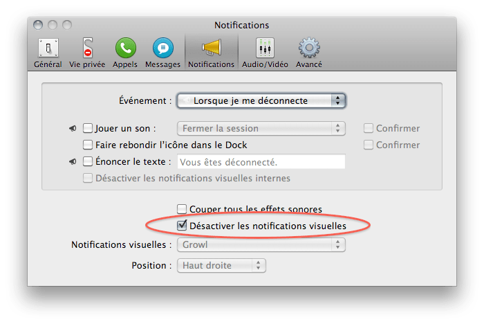
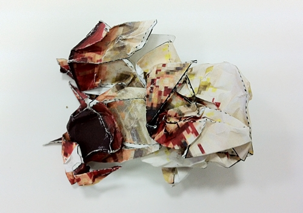

Про чекбоксы и не только

Никогда не меняйте смысл чекбокса на обратный, то есть когда "для того, чтобы что-то включить надо что-то выключить" (или наоборот). Это же противоестественно :)
На картинке показан клинический случай. А из классических примеров вспоминается инвертирование чекбокса на страничках логина с "запомнить меня на этом компьютере" на "не запоминать меня на этом компьютере" (отмеченный чекбокс будет означать абсолютно противоположные вещи), хотя вместо того, чтобы инвертировать смысл, достаточно всего лишь проставить правильное дефолтное значение.
И еще внезапно выяснилось, что смена языка интерфейса, часто помогает посмотреть на вещи совсем под другим углом :)
Рассказ о гусаре-схимнике
Небольшой и очень понравившийся мне отрывок из "Двенадцати стульев".
Опыт Джона Тилдана
Клевый опыт, демонстрирующий прохождение луча света в струе воды, аналогично тому, как он распространяется в оптоволокне. Вот для чего нужны лазерные указки!
Martini
Martini — марка вермута (от немецкого Wermut, полынь) — крепленое вино, ароматизированное пряными и лекарственными растениями.
The Shoes - Wastin' Time
Думал, вдруг торкнет альбом, а он не торкнул, но вот этот трек очень даже)
bash history
Чтобы каждая сессия bash объединяла историю в один глобальный файл, надо в ~/.bash_logout добавить строку: history -a $HISTFILE
Ну, а про CTRL+R вы же знаете, да? :)
Today screensaver
Нашел сегдня отличный минималистичный скринсейвер. Ну, а для ценителей глючный из Эшера :)
Failures

There are a lot of failures but most of them are minor ones.
Apparat - DJ-Kicks (2010)
А вот еще супер-штука!